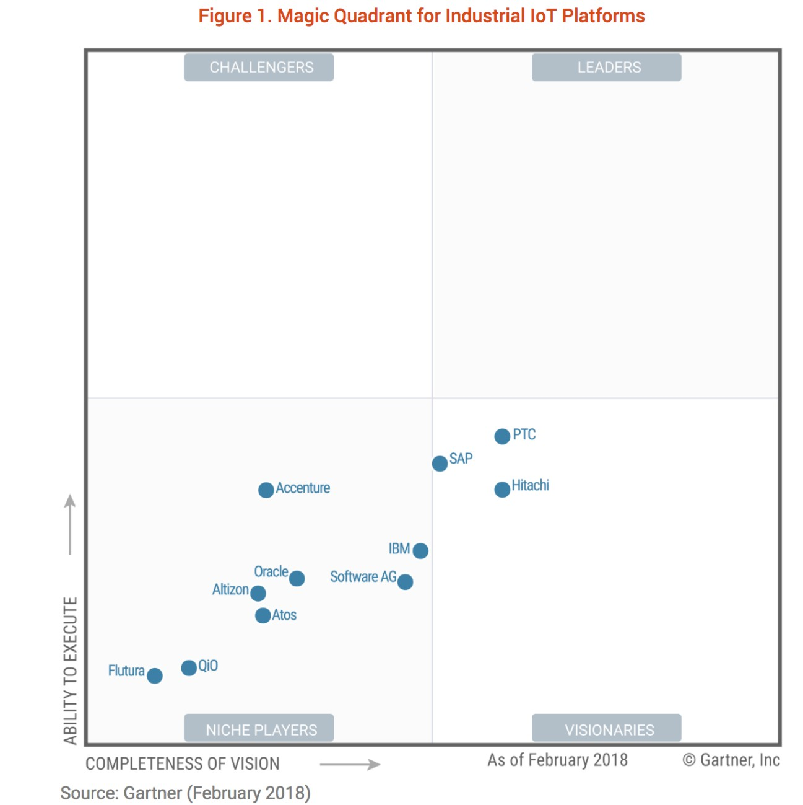

Relevancia del IoT en la Industria
18 Octubre, 2019
Continuando con el artículo anterior de IoT, esta vez analizaré la relevancia de esta tecnología en la industria actual. Para ello, me centraré principalmente en casos de éxito y de fracaso de empresas conocidas.
Como ya dije en el artículo anterior el mercado de los dispositivos inteligentes está creciendo a pasos agigantados y cada vez más y más empresas líderes en su sector están empezando a implementar esta tecnología. Sin embargo, algunas de las empresas que tratan de implementar esta disruptiva tecnología fracasan estrepitosamente y otras en cambio logran tener éxito.
Empezaré con un caso que del que aún no se sabe si tendrá éxito o no. Este es el caso de la gran compañía de retail Walmart. Tras aproximadamente un año de pruebas, esta gran compañía de retail, se quiere meter hasta tu cocina y dejarte la compra en la nevera por 20 euros al mes. Pero, ¿cómo conseguirán entrar en nuestras casas sin que nos sintamos desconfiados al respecto? [2]
Muy sencillo, la compañía quiere instalar cerraduras inteligentes a todos los clientes interesados en contratar el servicio y de esta manera, los empleados podrán entrar en nuestras casas para llenarnos la nevera. Para mayor tranquilidad de los clientes, todo lo que hace el empleado mientras se encuentra en nuestra casa será grabado en todo momento mediante una cámara que llevará integrada consigo. Además, en el momento en el que el trabajador entre en nuestra casa se nos enviará una notificación al smartphone para avisarnos de que el empleado se encuentra en nuestra casa. [2]
Creo que es una idea realmente genial y que puede suponer una gran innovación en el sector del retail. Sin embargo, sabemos que todos los dispositivos se pueden hackear y que cuando se trata de un lugar tan sagrado como nuestro hogar esta tecnología puede generarnos muchas interrogantes. ¿Tendrá éxito Walmart implementando este nuevo servicio?, el tiempo lo dirá.
Continuando con casos de éxito, el caso de Harley Davidson es un ejemplo de las increíbles ventajas que puede proporcionar el IoT a la industria. La famosa empresa manufacturera logró automatizar la producción de una de sus plantas mediante tecnología de detección y soluciones de automatización. El resultado fue reducir el tiempo necesario de los trabajadores para hacer tareas rutinarias y repetitivas. Gracias a esto, la planta logró reducir el tiempo de producción de los nuevos pedidos de 21 días a 6 horas, lo que supuso una disminución de 200 millones de dólares en costes operacionales y una enorme mejora de la eficiencia de producción. [3]
Sin embargo, con todos los materiales de marketing que se producen con estas palabras de moda, es fácil pensar que la industria 4.0 ha llegado y está al alcance, pero la verdad es que ninguna compañía ha cruzado labarra de Gartner para su ejecución, lo que indica que aún faltan unos años para que empiecen a aparecer compañías líderes en el sector con las habilidades necesarias para ejecutar planes con este tipo de tecnologías con seguridad. [4]
Esta tendencia por implementar el IoT en la industria no es ninguna casualidad, y es que según una investigación realizada el 20 de diciembre del 2017 por el Barómetro de Transformación de ISACA, se encontró que el 57 por ciento de los encuestados cree que el IoT es una tecnología disruptiva emergente en segundo lugar después del Machine Learning. Sin embargo, el 66 por ciento considera que el IoT tiene el mayor potencial de riesgo para su organización a pesar de su potencial para impulsar la innovación. [6]
Desde el punto de vista del vicepresidente de la junta directiva de ISACA Rob Clyde, la IoT tiene el potencial de remodelar completamente la forma en que las empresas manejan sus negocios. Además, las empresas tienenmucho que ganar, pero también mucho que perder. Por ello, es capital que las empresas cuenten con un plan de despliegue sólido y un equipo de TI que les ayude a impulsar la innovación aún más. [6]
Si se combina correctamente con el Machine Learning, las oportunidades del IoT son enormes. Sin embargo, esas oportunidades también pueden aumentar el riesgo para las empresas, y requieren un conjunto de disciplinas en el despliegue de la tecnología. ISACA recomendó lo siguiente para construir una buena gobernanza del IoT: [6]
- Construir seguridad y control mediante el diseño desde el principio.
- Probar controles y buscar vulnerabilidades creando y probando casos de uso correctos y casos de uso indebidos.
- Educar a los participantes con construir la seguridad junto con la funcionalidad mediante el diseño.
- Contar con personal de seguridad y garantía de TI con experiencia que comprenda los riesgos y beneficios de la ciberseguridad en la IoT.
- Sustituir el aislamiento de los especialistas que trabajan en silos por la colaboración entre especialidades.
Parece que las organizaciones ya han empezado a afinar sus técnicas para el correcto despliegue del IoT. Pero, ¿serán suficientes para una correcta implementación?
Referencias
- << Future-proofing your career >>, ISACA, vol 6 (2018): 10-11
- << Walmart se quiere meter hasta tu cocina, dejarte la compra en la nevera cuando no estás y además, cobrarte 20 dólares al mes >>, Xataka, acceso el 17 de Octubre del 2019, https://www.xataka.com/servicios/walmart-se-quiere-meter-tu- cocina-dejarte-compra-nevera-cuando-no-estas-cobrarte-20- dolares-al-mes
- << 5 Big IoT Success Stories for Business Leaders >>, acceso del 22 de Octubre del 2019, https://blog.tsl.io/5-big-iot-success- stories-for-business-leaders
- << Why Industrial IOT Is Usually A Failure - And How To Fix It >>, Forbes, acceso el 28 de Octubre del 2019, https://www.forbes.com/sites/annashedletsky/2018/08/06/why- industrial-iot-is-usually-a-failure-and-how-to-fix-it/#13ba078642ed
- << Why Can’t IoT Platforms Summit The Gartner Magic Quadrant? >>, acceso el 28 de Octubre del 2019, https://sightmachine.com/blog/why-iot-platforms-cant-summit-the- gartner-magic-quadrant/
- << ISACA Shares Good IoT Governance for Safe and Efficient Deployment >>, ISACA, acceso el 17 de Octubre del 2019, http://www.isaca.org/About-ISACA/Press-room/News-Releases/201 7/Pages/ISACAS-hares-Good-IoT-Governance-for-Safe-and-Efficient- Deployment.aspx